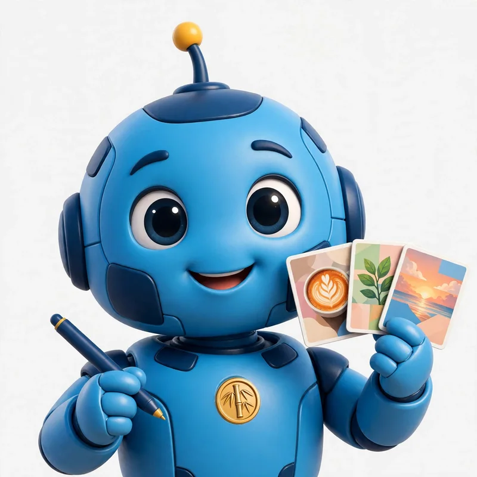
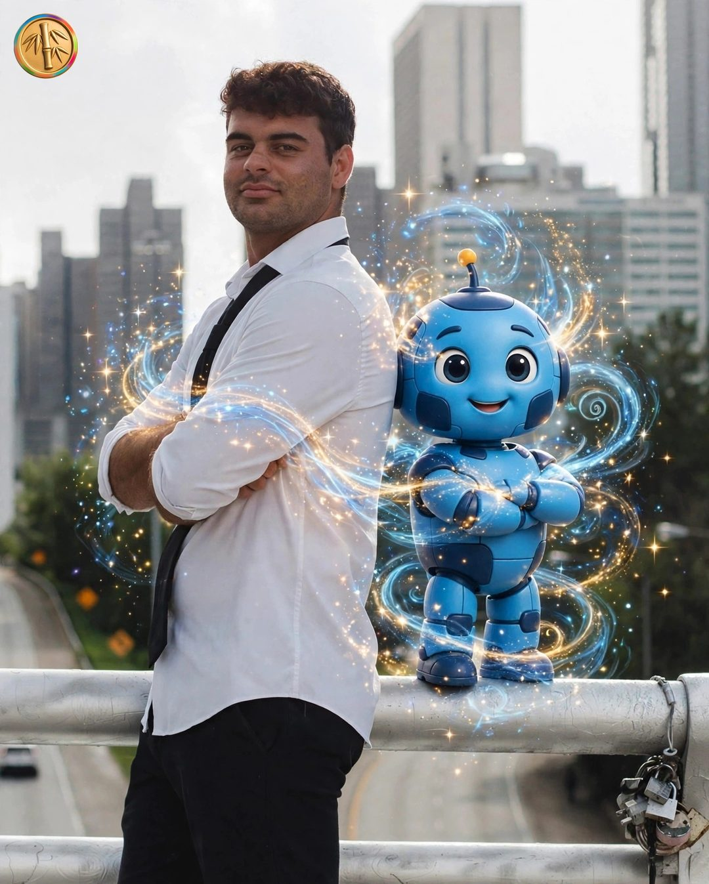

Posty está trabajandoAsí trabaja Posty por vos arma tus posteos mientras charlamos
Tu community manager completo: armo tu semana de posteos, la publico por vos y estudio tu negocio.
Todo con la onda de tu negocio y tu producto exacto. Vos solo aprobás — poné tu @ y mirá tu semana como si ya fueras cliente. Sin tarjeta.
Posteos de verdad, de semanas que armé para negocios como el tuyo.
Diseño + caption + hashtags, con las fotos y los colores de cada negocio.
Posty crea un video cinematográfico de tu producto, listo para publicar — incluido en todos los planes.
Y de regalo, el diagnóstico de tu Instagram: qué mejorar, qué subir y qué bajar.
Tu semana lista en ~2 minutos · Gratis · Sin tarjeta · Sin tu contraseña de Instagram
Tu semana lista en ~1 minuto.
Tres pasos y tu Instagram anda solo.
10 segundos: tu Instagram o el link de tu sitio, nada más.
3 posteos + 1 reel de muestra: diseño, caption y hashtags con tu onda y tus colores.
Nada sale sin tu OK.
Un community manager cobra desde $1.000.000 por mes. Posty, desde USD 199.

Founder de Posty
Creé Posty porque identifiqué un problema en cada negocio que conozco: gente talentosa ocupándose de Instagram en vez de ocuparse de su negocio. Y pensé: esto no lo tiene que hacer el dueño. Lo tiene que hacer alguien por él. Ese alguien es Posty. Vos solo monitoreás, y si algo no te gusta, lo ajustamos juntos.
No es solo postear: es el trabajo completo de un community manager, todos los días.
Posteos y reels con tu marca: tus fotos, tus colores y tu producto exacto. Nada de plantillas iguales para todos.
Captions y hashtags en tu tono, pensados para que te compren, no para rellenar.
A la mejor hora, todos los días. Te avisa 30 minutos antes por si querés frenar algo.
Lee tu Instagram y tu rubro: qué vende, qué está funcionando y qué hace tu competencia.
Día de la Madre, Hot Sale, Navidad: tu semana se adapta sola, sin que te acuerdes vos.
Cada semana, ideas nuevas para tu negocio, listas para aprobar con un toque.
Detecta el posteo que la rompe y te propone impulsarlo con pauta. Vos fijás el tope de gasto.
Una página pública de tu negocio con botón de WhatsApp directo a vos.
Frenás cualquier posteo con un toque, pedís cambios en el chat como si hablaras con tu CM, o aprobás todo a mano si preferís.
Y cada semana te llega el resumen: qué funcionó, qué sigue y el foco del mes.
No: te conectás con Meta, sin compartir contraseñas.
En ~1 minuto la tenés lista.
Sí, cuando quieras.